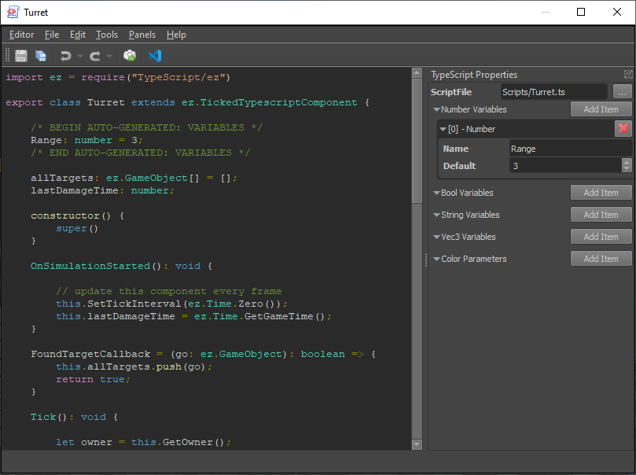

TypeScript Asset
Each TypeScript asset manages the script for a single custom TypeScript component. You create a new TypeScript asset using File > Create....

The document displays the script file contents as read-only. The document has no text editing functionality. The actual script code is stored in a separate .ts file, such that you can edit it with a regular text editor. After creating a new TypeScript asset, the ScriptFile property will have a default value for the .ts file. You can change this location, if you wish.
Code Editing
The ezEditor assumes that you have Visual Studio Code installed. When you click the VSC icon in the toolbar, it will launch Visual Studio Code with a workspace setup that includes all data directories of the project. It also makes sure that the referenced ScriptFile is created and filled out with some template code, if the file doesn't exist yet.
From there on, you can write the code in the external editor. Transforming the asset (Ctrl+E) will transpile the script and update the text preview.
Script Parameters
In the asset properties you can add variables. Each variable has a name and a default value. After changing the variables you have to transform the script (toolbar button or Ctrl+E). This will insert the necessary code into the script. Make sure to not touch the markers for the auto-generated code section.
The variables that you add here will become exposed parameters for this script. Meaning, when this asset is used through a TypeScript component, the component can override the values of these variables. Thus you can instantiate the same script many times with different starting parameters.
Non-Component TS Files
You can split up script code into multiple files, for example to easier share code between TS components. Simply create as many .ts files as you need and 'include' them as needed (using require). Having a TypeScript asset is not required for such files. TypeScript assets are only needed for the main TS files that represent a proper custom component type. The TypeScript assets are needed in the editor to be able to select the desired TS component code on a TypeScript component, and at runtime they are used to know how to instantiate the script. The assets are not used to identify which files to transpile. Instead, the editor will simply transpile all .ts files that it finds in any data directory of the project.